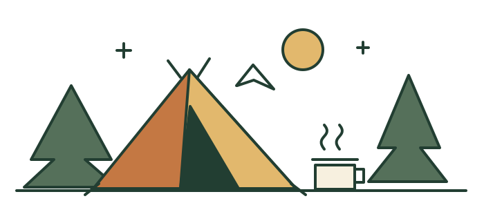
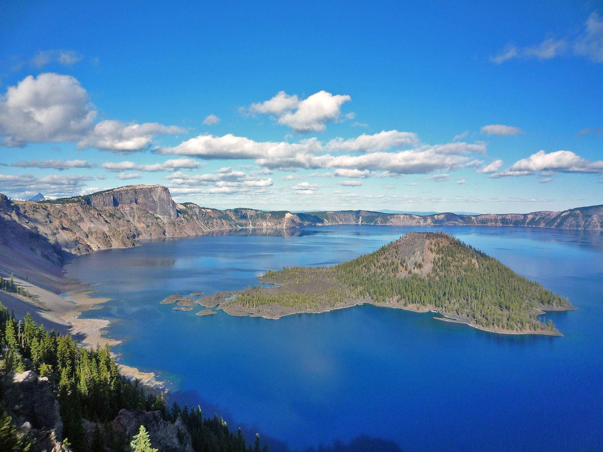
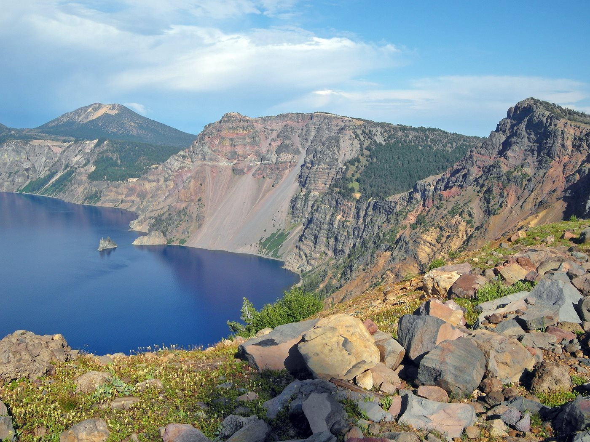
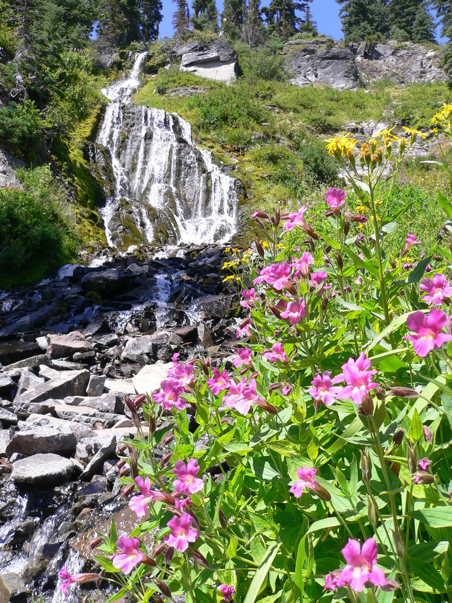

Rim Drive & North Entrance
NPS lists these roads open. Winter closures begin November 1 or earlier with significant snowfall. Open today does not establish access on your trip.
Read current park conditions ↗Cold mornings. Deep blue water.
Something good on the camp stove.


Worth the early start.Planning edition. Planning window: October 22–27, 2026 (six days). Starting point: Eugene Airport (EUG). Vehicle, departure and return times are not confirmed. This is a dated research snapshot—not a live road feed. Open the official sources before driving. Personal itinerary details are not published here.
NPS lists these roads open. Winter closures begin November 1 or earlier with significant snowfall. Open today does not establish access on your trip.
Read current park conditions ↗Use Oregon TripCheck for closures, cameras and traction restrictions on your actual route. Starting from EUG: watch OR-58 / Willamette Pass, US-97, OR-138 and the park approach. Live travel time is not yet verified.
Open TripCheck ↗NPS reports Cleetwood Cove Trail closed all season for construction. East Rim Drive is open with possible traffic control near remaining work.
Read the NPS update ↗Facilities: NPS’s top-level status lists Mazama Campground, the lodge and gas pumps closed. A lower paragraph contradicts that campground/lodge status. Treat them as unavailable until directly confirmed. Do not count on fuel in the park.
North Entrance open: from Eugene, NPS routes visitors via OR-58 → US-97 → OR-138 → North Entrance. Willamette Pass is a key condition check.
North Entrance closed: continue south on US-97 toward Chiloquin, then OR-62 to the South Entrance. A year-round entrance does not guarantee every road is open during a storm.
Official route guidance ↗ · Check current driving estimate ↗
Arrival flight, airport pickup and return flight times are unconfirmed. Allow for airport pickup, groceries and daylight campsite setup; no invented ETA.
Drive time to the rim matters more than distance to the park boundary. These are investigation candidates; the nearest legal, usable dispersed site cannot be ranked until the exact route, road access and vehicle are known. National Forest land is not the same as BLM land.
NPS lists overnight camping just south of the boundary. The Forest Service page confirms toilets, no drinking water and winter permit requirements, but does not explicitly confirm overnight camping. Check with the managing ranger district before relying on it.
Managing agency details ↗NPS lists overnight parking/camping, toilets, shelter and no water, 14 miles west of park headquarters—not 14 miles from the lake. Its listing is older; confirm current access and restrictions. This is not a secluded forest campsite.
NPS nearby-camping directory ↗Nearby developed campgrounds offer a fallback to dispersed camping, but seasonal closing dates and North Entrance access matter. Forest-road camps require land-boundary, motor-vehicle-map and closure checks before selecting a spot.
Umpqua National Forest ↗Seasonal permits: the cited Sno-Park listings describe free use May–October and permits November–April. A parking permit is not blanket permission to camp anywhere. NPS prohibits camping in park pullouts and parking lots.
BLM search trap: BLM’s listing named “Crater Lake” is in Idaho, not this Oregon park. No nearby BLM site has yet been verified for this trip. Check the location ↗


Original meal ideas for two, designed for a skillet and pot. No campfire required. Confirm stove restrictions locally; adjust for dietary needs once known.
Pack: 4 tortillas, 1 can drained black beans, 1 sliced pepper, 1 cup shredded cheese, oil, smoked paprika and salsa.
Soften pepper in a little oil. Add beans and paprika; heat through. Fill tortillas with beans and cheese, fold, then toast in the skillet on both sides until crisp. Serve with salsa. Prep the pepper at home and keep the cheese cold.
Pack: 1 cup couscous, 1 can drained chickpeas, 1 lemon, olive oil, olives and a handful of chopped parsley.
Cook couscous according to its packet. Warm chickpeas separately or stir into the hot couscous. Finish with olive oil, lemon, olives and parsley. Shelf-stable ingredients make this a useful backup dinner.
Pack: 2 apples, cinnamon, 1 tablespoon butter, a splash of water and ½ cup granola.
Slice apples. Cover and simmer with butter, cinnamon and water until tender, then uncover to reduce the liquid. Scatter granola over the top just before eating. Two spoons straight from the pan, once it has cooled enough.
Pack: 4 eggs, 4 small tortillas, cheese, salsa and leftover beans.
Warm the beans and tortillas, then scramble the eggs until fully set. Assemble tacos and add salsa. Keep eggs and cheese in a reliably cold cooler.
Checks save on this device only. They are not synced between travelers.
Still to confirm: departure/return times, tent vs. vehicle sleeping, vehicle clearance, cooking equipment, dietary needs and whether pets are coming. No reservations have been made.